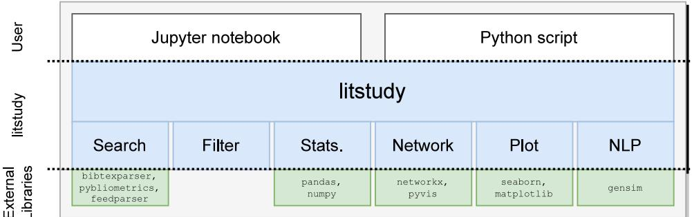
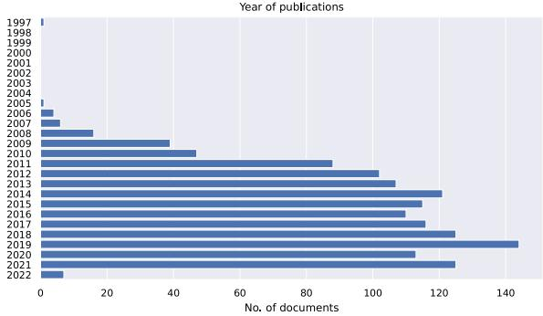
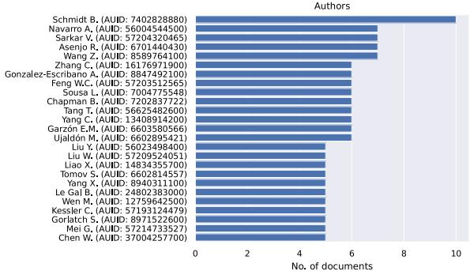
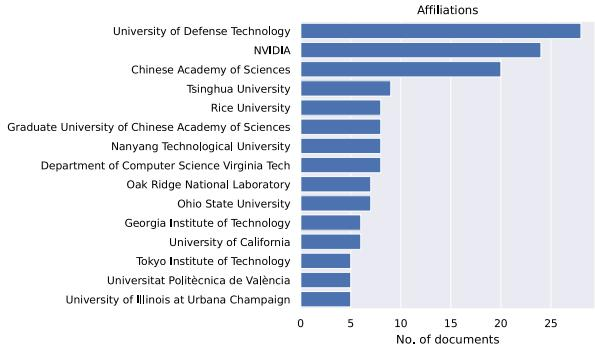
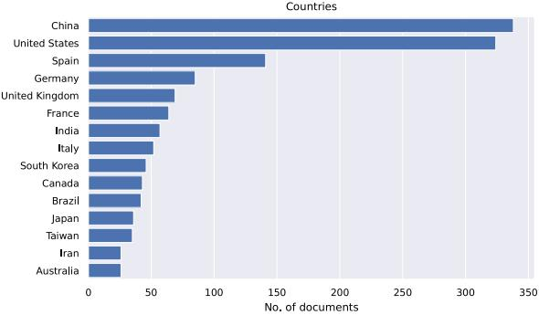
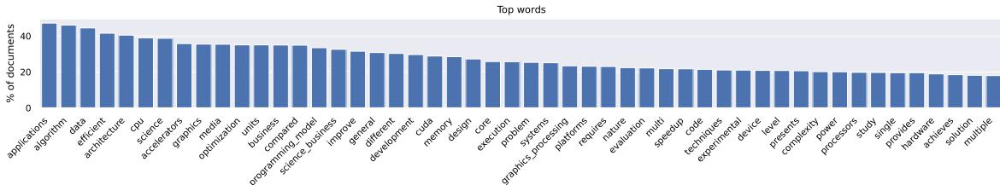
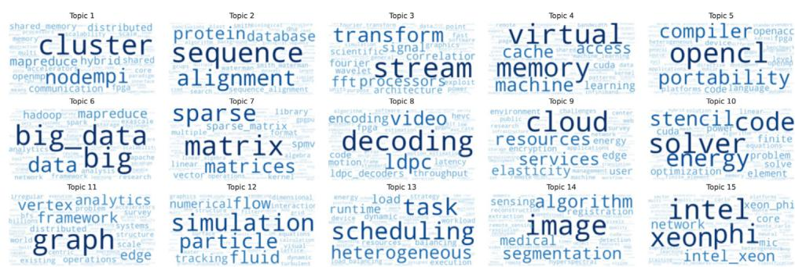
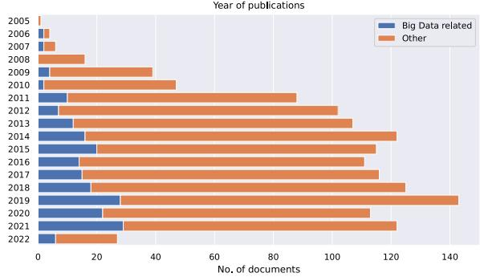
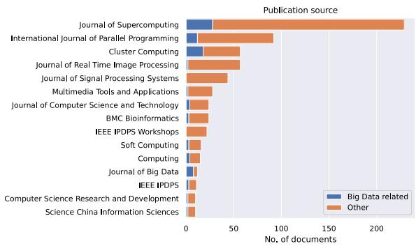
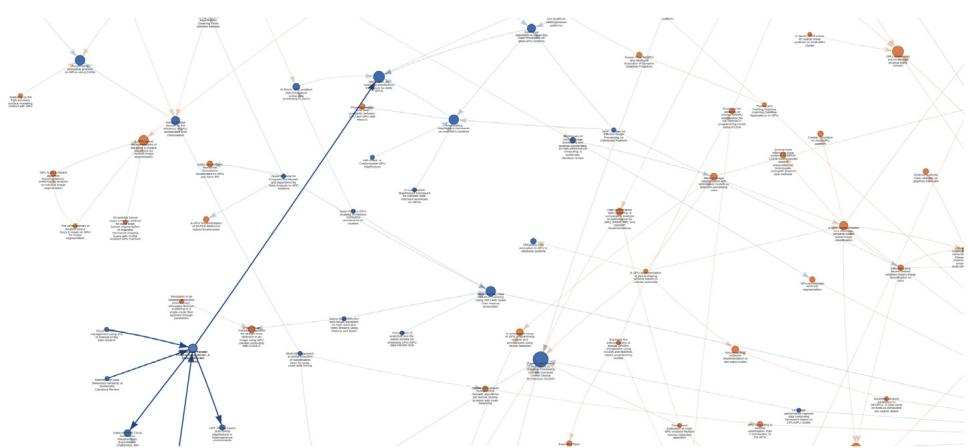

Original software publication
litstudy: A Python package for literature reviews¶
Stijn Heldens a,b,∗, Alessio Sclocco a, Henk Dreuning b, Ben van Werkhoven a, Pieter Hijma c, Jason Maassen a, Rob V. van Nieuwpoort a,b
a Netherlands eScience Center, Science Park 402, Amsterdam, The Netherlands
b University of Amsterdam, Science Park 904, Amsterdam, The Netherlands
c Vrije Universiteit Amsterdam, De Boelelaan 1111, Amsterdam, The Netherlands
a r t i c l e i n f o¶
Article history: Received 18 February 2022 Received in revised form 24 June 2022 Accepted 6 September 2022
Keywords: Literature review Python Jupyter Bibliometrics
a b s t r a c t¶
Researchers are often faced with exploring new research domains. Broad questions about the research domain, such as who are the influential authors or what are important topics, are difficult to answer due to the overwhelming number of relevant publications. Therefore, we present litstudy: a Python package that enables answering such questions using simple scripts or Jupyter notebooks. The package enables selecting scientific publications and studying their metadata using visualizations, bibliographic network analysis, and natural language processing. The software was previously used in a publication on the landscape of Exascale computing, and we envision great potential for reuse
© 2022 The Author(s). Published by Elsevier B.V. This is an open access article under the CC BY license (http://creativecommons.org/licenses/by/4.0/).
Code metadata¶
Current code version Permanent link to code/repository used for this code version Permanent link to Reproducible Capsule Legal Code License Code versioning system used Software code languages, tools, and services used Compilation requirements, operating environments & dependencies If available Link to developer documentation/manual Support email for questions
1.0.2 https://github.com/ElsevierSoftwareX/SOFTX-D-22-00050 https://doi.org/10.5281/zenodo.3386071 Apache License 2.0 git Python Python >= 3.6 https://nlesc.github.io/litstudy https://github.com/NLeSC/litstudy/issues
1. Motivation and significance¶
Researchers often have to explore new scientific domains that are outside their field of expertise. Examples include experienced scholars who want to explore new research directions or earlycareer researchers (e.g., students) who want to understand the scientific domain of the topic that they will be working on.
However, getting a good broad overview of an area of study is often difficult due to the large number of relevant publications that are available nowadays. For instance, on Elsevier’s Scopus, the search query ‘‘deep learning’’ yields 166,583 results, ‘‘energy-efficient computer architectures’’ yields 17,085 results, and ‘‘parallel programming model’’ yields 6,306 results.1 Going through such a list of publications manually is a monumental effort. Literature reviews present a solution to this problem, but they might not always be available, may be too broad or too narrow in scope, and can be outdated quickly for fast-moving research areas.
In this work, we present litstudy [1]: a Python package that assists in exploring scientific literature. The package can be used from simple Python scripts or Jupyter notebooks [2], allowing researchers to quickly and interactively experiment with different ideas and methods. Our package is built upon and compatible with many popular tools from Python’s data science ecosystem, such as Pandas [3,4] and NumPy [5]. The package is available for installation from the Python Package Index (PyPi).2

Fig. 1. Software architecture of litstudy..
Overall, litstudy offers five main features:
• Extract metadata of scientific documents from various sources. A unified interface allows data from different sources to be combined.
• Filter, select, deduplicate, and annotate collections of documents.
• Compute and plot general statistics on the metadata of the documents (e.g., statistics per year, per author, per journal, etc.).
• Generate, plot, and analyze various bibliographic networks that reveal relations between publications and their authors.
• Automatic topic discovery based on natural language processing (NLP).
In particular, litstudy is useful for performing bibliometric analysis [6] or for the early stages of a mapping review [7] (also referred to as a scoping review [8]), where the goal is to get a broad overview of a research field. Our package can also be of assistance during a systematic literature review. For instance, Kitchenham & Charters [7] provide guidelines for performing such reviews in software engineering and litstudy is useful during several stages, most notably during identification of research and selection of primary studies. However, supporting the user during a complete systematic review [9] is not the primary goal of litstudy, and we refer to Kohl et al. [10] for an overview of tools that do have that aim.
Several Python packages for the analysis of scientific literature already exist and we give examples of a few of them. Libraries such as pybliometrics [11], pubmedpy [12], and arxiv.py [13] provide access to the API of Scopus, PubMed, and arXiv, respectively, but these libraries do not provide any further analysis or visualization functionality. PubTrends [14] is a tool for scientific literature exploration written in Python and Java, but it is not a Python library that can be used from within a Python script. Metaknowledge [15] and Tethne [16] are two Python libraries that support parsing of bibliographic data from different sources and analysis of citation networks. These tools differ from litstudy in that they do not support other types of analysis, such as plotting statistics on document metadata or topic discovery using natural language processing.
2. Software description¶
In this section, we discuss the functionality of litstudy. The package is implemented in Python. The software architecture (see Fig. 1) consists of six modules that are discussed in the following sections: Bibliographic Data Sources (Section 2.1), Filtering (Section 2.2), Statistics (Section 2.3), Bibliographic Networks (Section 2.4), Plotting (Section 2.5), and Natural Language Processing (NLP) (Section 2.6).
2.1. Bibliographic data sources¶
litstudy supports several methods to retrieve metadata of scientific publications. Note that litstudy only works on metadata, it does not fetch or have access to the content of documents.
Table 1 lists the supported sources and their properties. All sources provide basic metadata such as the title, authors, publication date, and DOI (Digital Object Identifier). Some also provide the abstract, which is required when using automatic topic discovery. Several sources provide data on references/citations, required for constructing bibliographic networks (Section 2.4).
Several online citations databases for scientific literature exist and litstudy supports four of them: Scopus [17], Semantic Scholar [18], CrossRef. [19], and dblp [20]. For each, litstudy offers convenient functions to query the database (e.g., litstudy.search_scopus for Scopus). We found Scopus to be the most comprehensive, but it is not a free service and access requires a Scopus account.
Besides performing a search query, some of these services also allow finding the metadata for a specific document based on its DOI. For litstudy, we make use of this by offering a process that we call refinement. This process consists in fetching additional metadata for documents already present in a set, such as the results of a previous query on another service.
Besides querying online databases, litstudy also supports loading several citation file formats. Citations in RIS and BibTeX, two file formats for managing academic citations, can be imported. Additionally, results from the online search engine of IEEE (IEEE Xplorer [21]) and Springer (SpringerLink [22]) can also be imported into litstudy. To use this functionality, one needs to export the results from the publishers’ website into a CSV file first. While the data provided by these CSV files is minimal, the citations can be improved using the refinement process described above.
2.2. Filtering, selection, deduplication, and annotation¶
In litstudy, each document is represented as an abstract Document class which offers access to the metadata of each document in a unified fashion. A collection of Document objects is represented by a DocumentSet class. This class supports all set options (i.e., union, intersection, difference, subset) to allow creating a new DocumentSet from other sets. For instance, it is possible to query two different sources and merge the two DocumentSets into one large DocumentSet. When merging, litstudy performs deduplication (i.e., removal of duplicate entries) based on unique document identifiers (i.e., DOI, PubMed ID, Scopus ID) or, as a fallback, a fuzzy match on the titles.
Table 1
Bibliographic data sources supported by litstudy.
| Name | Search by | Information provided | Quality | ||||
| Query | DOI | Basics | Abstract | Refs. | Cited by | ||
| Scopus [17] | Yes | Yes | Yes | Yes | Yes | Yes | ★★★ |
| Semantic Scholar [18] | Yes | Yes | Yes | Yes | Yes | Yes* | ★★☆ |
| CrossRef [19] | - | Yes | Yes | Yes | Yes | Yes* | ★★☆ |
| dblp [20] | Yes | - | Yes | - | - | - | ★☆☆ |
| Publisher's Search Engine | Yes | - | Yes | Yes | - | Yes | ★★☆ |
| BibTeX | - | - | Yes | - | - | - | ☆☆☆ |
| RIS | - | - | Yes | - | - | - | ☆☆☆ |
Yes* in Cited by indicates that only the number of citations is provided, not the full list of citations.
A more advanced feature provided by litstudy is support for annotation by assigning properties to the documents in a DocumentSet. For example, a text property could be the journal name, a integer property could be the citations count and a boolean property could be whether a certain keyword is mentioned. Annotations can be used to explore the dataset further since they enable interactions between the different functions in litstudy. For example, it is possible to plot a histogram where documents are grouped on the journal name or plot a bibliographic network where the node size follows from the citation count.
2.3. Statistics¶
litstudy allows statistics to be extracted from a DocumentSet. Examples include the publications per year, per author, per affiliation, per country/continent of affiliation, or per venue. These statistics can either be returned as a Pandas DataFrame [3,4] for further analysis or directly plotted as bar graphs in a Jupyter notebook. Note that not all data sources provide sufficient information to extract all statistics, thus a DocumentSet may first need to be refined to calculate some of these statistics. For instance, the country of affiliations is not provided by BibTex files, but is provided by Scopus.
2.4. Bibliographic networks¶
A bibliographic network is a type of graph where nodes represent authors or publications and edges represent the relation between them (e.g., citation or co-authorship). Five types of networks can be extracted from a DocumentSet using litstudy: citation network [23], co-citation network [24], bibliographic coupling network [25], co-author network [26], and author-publication network [27]. Each network is returned as a networkx.Graph object, enabling further graph analysis using the networkx ecosystem [28] (e.g., connected components discovery, PageRank scoring, community detection).
2.5. Plotting¶
litstudy provides plotting utilities for the statistics discussed in Section 2.3, and for the bibliographic networks discussed in Section 2.4. Plotting of statistics is done using seaborn [29] and matplotlib [30] which can be done directly from within a Jupyter notebook. Plotting of the networks is done as an interactive visualization using pyvis [31].
2.6. Natural language processing¶
Unsupervised topic modeling [32] is a technique from natural language processing (NLP) that discovers abstract topics in a ll f l h f h d ff h d mains have different vocabularies. For instance, machine learning papers uses different terms (e.g., ‘dataset’, ‘validation’, ‘training’) than papers on cryptography (e.g., ‘encryption’, ‘security’, ‘protocol’). Topic modeling methods automatically detect a set of topics, where each topic is described using a small set of words and each document has weights assigned towards these topics. Topic modeling is done in three steps:
preprocess The function litstudy.build_corpus takes the words from the title/abstract of each document in a DocumentSet, performs various preprocessing steps, and returns a Corpus object. Because the exact preprocessing steps required could be problemdependent [32], litstudy provides many options (such as stemming, word removal, n-gram detection, etc.).
train Two topic models are currently supported by litstudy: NMF [33,34] (Non-negative Matrix Factorization) and LDA [35] (Latent Dirichlet Allocation). NMF is a factorization algorithm commonly used for dimensionality reduction, while LDA is a generative statistical model based on a probabilistic method. The package gensim [36] is used to train the topic models. In practice, we find the results by NMF to be of higher quality than LDA for scientific abstracts.
visualize There are various methods in litstudy to visualize the resulting topics such as plotting word distribution histograms, visualizing the topics as word clouds, and embedding the documents in a 2D ‘landscape map’ [37].
3. Illustrative example¶
In this section, we illustrate the use of litstudy exploring the field of GPU programming models. GPUs (Graphics Processing Units) are specialized parallel processors that are nowadays used to handle workloads for science, computer graphics, and machine learning. However, programming GPUs remains challenging, which is why there is research on new programming models for these devices.
3.1. Compiling the dataset¶
Listing 1 illustrates one way to use litstudy. Note that this example can be executed from a Jupyter notebook [2], which allows for interactive exploration. Lines 3–18 show how to construct a dataset in multiple steps. For this example, results from IEEE Xplore and Springer Link were exported as CSV files for the following search query: GPU AND ‘‘programming model’’. Lines 4–7 load and merge the content of these files.
import litstudy
# Load the CSV files.
docs_ieee = litstudy.load_ieee_csv("ieee_results.csv")
docs_springer = litstudy.load_springer_csv("springer_results.csv")
docs_csv = docs_ieee | docs_springer
print(len(docs_csv), "papers loaded")
# Refine using Scopus.
docs_scopus, docs_notfound = litstudy.refine_scopus(docs_csv)
print(len(docs_scopus), "found on Scopus, ", len(docs_notfound), "not found"))
# Plot year histogram.
litstudy.plot_year_histogram(docs_scopus) # Fig. 2(a)
# Filter on publication year.
docs = docs_scopus.filter_docs(lambda d: d.publication_year >= 2000)
print(len(docs), "papers")
# Plot general statistics and networks.
litstudy.plot_author_histogram(docs) # Fig. 2(b)
litstudy.plot_affiliation_histogram(docs, limit=15) # Fig. 2(c)
litstudy.plot_country_histogram(docs) # Fig. 2(d)
# Build corpus and plot word distributions.
corpus = litstudy.build_corpus(docs, ngram_threshold=0.6)
litstudy.plot_word_distribution(corpus, limit=100) # Fig. 3
# Train topic model and plot topics as word clouds.
num_topics = 15
topic_model = litstudy.train_nmf_model(corpus, num_topics)
litstudy.plot_topic_clouds(topic_model) # Fig. 4
The metadata in these CSV files is minimal, so line 10 searches Scopus for the corresponding documents. In this example, 1387 citations are found on Scopus, while 53 unavailable citations are discarded. Line 14 plots the number of publications per year, revealing one document from 1997 (Fig. 2(a)). This is an error since GPUs were not used for general computing until around 2005. This error can easily be corrected, showing the value of interactive exploration. Line 17 filters out the documents published before 2000, resulting in a final dataset of 1386 papers.
3.2. Basic exploration¶
Lines 20–23 plot general statistics: the number of publications per author (Fig. 2(b)), per affiliation (Fig. 2(c)), and per country of affiliation (Fig. 2(d)).
Lines 25–32 show an example of topic modeling. Line 26 builds a corpus from the set of documents. This functions takes many parameters and, in this example, the parameter ngram_threshold is provided so common sequences of words are recognized as n-grams.3 For example, the terms big and data are recognized as a single term big_data, instead of two separate words. Line 27 plots the word distribution (Fig. 3). Line 31 trains an NMF topic model with 15 topics and line 32 plots the topics as word clouds (Fig. 4). The automatically generated topics appear meaningful: Some topics are on applications (e.g., topic 2: sequence alignment; topic 12: particle simulation; topic 14: image algorithms), other topics are on data structures (e.g., topic 7: matrices; topic 11: graph), and yet other topics are on computer science topics (e.g., topic 1: clusters; topic 5: OpenCL; topic 9: cloud services; topic 13: task scheduling).
3.3. Further exploration¶
Listing 2 shows an example of how further exploration can be done using document properties. From Fig. 4 we can conclude that topic 6 is on big data computing. We can then add a property indicating whether each document strongly belongs to this topic or not. This is done in three steps: line 3 finds the topic that most strongly represents the term big_data, line 4 finds the topic weights, and line 5 adds a boolean property bigdata_topic to each document indicating if its weight for the Big Data topic exceeds a threshold (for this example, it is 0.1).
Lines 7–13 define two groups (i.e., having the bigdata_topic property or not) and plot the number of publications per year (Fig. 5(a)) and publication venue (Fig. 5(b)) for these two groups. The first figure shows that the interest in Big Data within the GPU programming community is still rising since the fraction of papers on Big Data increases per year: from 14% in 2011 to 26% in 2021. The second figure shows that some journals focus mostly on Big Data (e.g., ‘‘Journal of Big Data’’) and others not at all (e.g., ‘‘Journal of Real-Time Image Processing’’).
Fig. 6 visualizes the citation network where node color indicates the bigdata_topic property. Note that inside a Jupyter notebook this visualization can be explored interactively. The figure shows that it is common for documents on Big Data (blue nodes) to cite other Big Data documents. Further analysis shows that this is indeed the case: it is 3.1× more likely that a paper on Big Data cites another paper on Big Data compared to an arbitrary paper citing a Big Data paper.
4. Impact¶
In an ACM Computing Surveys paper, litstudy was used by Heldens et al. [38] to explore the domain of exascale computing. Exascale computing refers to large-scale computer systems capable of performing at least 1018 floating-point operations per second, which is roughly six orders of magnitude more than a modern CPU. The domain of exascale computing is broad and covers all aspects of high-performance computing, including software, computer architectures, energy efficiency, networks, software, and the scientific community. This makes it challenging to obtain a good and complete overview of exascale computing.

(a) Publication years.

(b) Author names

(c) Author affiliations.

(d) Countries of author affiliations.
Fig. 2. Example of general statistics.

Fig. 3. Example word distribution for corpus

Fig. 4. Visualization of topic model using word clouds. Each word cloud represents one of the 15 detected topics where the size of the words indicate the relevance of each word to the topic.
The work by Heldens et al. [38] used a three-stage methodology where each step incorporated data-driven techniques (using litstudy) alongside manual analysis. The work concluded that there has been great progress in tackling the two traditional major barriers for exascale computing, but two new challenges are emerging. The research would have been impossible without litstudy.
We believe litstudy can be of great assistance in applying the same (or similar) method to other fields of study. The authors of this paper have supervised several undergraduate and graduate students that have used the software to explore related literature. Several Ph.D. students have already contacted us that used litstudy to explore the literature for their research field. The package is available as open-source software and statistics on the project’s GitHub repository [1] show that there is also a clear interest from the community with already 23 stars4 and 11 f k 5
# Add property "bigdata_topic" to documents.
threshold = 0.1
bigdata_topic = topic_model.best_topic_for_token("big_data")
weights = topic_model.documents_topics(bigdata_topic)
docs.add_column("bigdata_topic", weights > threshold)
# Plot statistics on year of publication and publication venues.
groups = {
"Big Data related": "bigdata_topic",
"Other": "not bigdata_topic",
}
litstudy.plot_year_histogram(docs, groups=groups, stacked=True) # Fig. 5(a)
litstudy.plot_venue_histogram(docs, groups=groups, stacked=True) # Fig. 5(b)
# Plot citation network.
litstudy.network.plot_citation_network(docs, color="bigdata_topic") # Fig. 6

(a) Publication years.

(b) Publication venues.
Fig. 5. Example of statistics for Big Data topic within the dataset.

Fig. 6. Example of a citation network: nodes represent publications and the edges indicate citations. Node size indicates number of citations. Node color indicates whether a publication is on Big Data (blue) or not (orange). Inside a Jupyter notebook this is an interactive network visualization. A node on the bottom left has been selected in the visualization, highlighting its adjacent edges. (For interpretation of the references to color in this figure legend, the reader is referred to the web version of this article.)
5. Conclusions¶
In this work, we present litstudy, a Python package for exploring scientific literature by allowing users to select scientific publications and analyze their metadata using visualizations, network analysis, and natural language processing. The software was used to explore the landscape of Exascale computing, and several Ph.D. students already used the tool to map the landscape of the related work for their research. Given their positive feedback and interest from the community, we envision great potential for reuse.
Declaration of competing interest¶
The authors declare that they have no known competing financial interests or personal relationships that could have appeared to influence the work reported in this paper.
Data availability¶
No data was used for the research described in the article.
Acknowledgments¶
We are grateful to all people that contributed to litstudy in one way or the other, either through code commits6 or live discussions. In particular, we thank dr. W.A. Günther for many helpful discussions on natural language processing, and the two anonymous reviewers for their valuable time and feedback.
Funding¶
This work has received funding from the European Union’s Horizon 2020 research and innovation programme under grant agreements No 777533 (PROCESS) and No 823988 (ESiWACE2), and the Netherlands eScience Center under file number 027.016.G06.
References¶
[1] Heldens S. litstudy. Zenodo; 2022, http://dx.doi.org/10.5281/zenodo. 3386071, URL https://github.com/NLeSC/litstudy.
[2] Kluyver T, Ragan-Kelley B, Pérez F, Granger B, Bussonnier M, Frederic J, et al. Jupyter Notebooks – a publishing format for reproducible computational workflows. In: Loizides F, Scmidt B, editors. Positioning and power in academic publishing: players, agents and agendas. IOS Press; 2016, p. 87–90, URL https://eprints.soton.ac.uk/403913/.
[3] The pandas development team. pandas-dev/pandas: Pandas. Zenodo; 2020 http://dx.doi.org/10.5281/zenodo.3509134.
[4] McKinney W. Data structures for statistical computing in python. In: van der Walt S, Millman J, editors. Proceedings of the 9th Python in science conference. 2010, p. 56–61. http://dx.doi.org/10.25080/Majora-92bf1922- 00a.
[5] Harris CR, Millman KJ, van der Walt SJ, Gommers R, Virtanen P, Cournapeau D, et al. Array programming with NumPy. Nature 2020;585(7825):357–62. http://dx.doi.org/10.1038/s41586-020-2649-2
[6] De Bellis N. Bibliometrics and citation analysis: from the science citation index to cybermetrics. scarecrow Press; 2009.
[7] Kitchenham B, Charters S, et al. Guidelines for performing systematic literature reviews in software engineering version 2.3. Engineering 2007;45(4ve):1051.
[8] Wohlin C, Runeson P, da Mota Silveira Neto PA, Engström E, do Carmo Machado I, de Almeida ES. On the reliability of mapping studies in software engineering. J Syst Softw 2013;86(10):2594–610. http://dx.doi org/10.1016/j.jss.2013.04.076, URL https://www.sciencedirect.com/science article/pii/S0164121213001234.
[9] Kitchenham B, Brereton P. A systematic review of systematic review process research in software engineering. Inf Softw Technol 2013;55(12):2049–75.
[10] Marshall C, Brereton P. Tools to support systematic literature reviews in software engineering: A mapping study. In: 2013 ACM/IEEE International symposium on empirical software engineering and measurement. IEEE; 2013. p. 296–9.
[11] Rose ME, Kitchin JR. Pybliometrics: Scriptable bibliometrics using a python interface to scopus. SoftwareX 2019;10:100263. http://dx.doi.org/10.1016/j. softx.2019.100263, URL https://www.sciencedirect.com/science/article/pii S2352711019300573.
[12] pubmedpy https://github.com/dhimmel/pubmedpy.
[13] Arxiv.py v1.4.2. 2022, https://pypi.org/project/arxiv/. [Accessed 21 June 2022].
[14] Shpynov O, Nikolai K. PubTrends: A scientific literature explorer. In: Proceedings of the 12th ACM Conference on bioinformatics, computational biology, and health informatics. BCB ’21, New York, NY, USA: Association for Computing Machinery; 2021, http://dx.doi.org/10.1145/3459930. 3469501.
[15] McIlroy-Young R, McLevey J, Anderson J. Metaknowledge: open source software for social networks, bibliometrics, and sociology of knowledge research. 2015, http://www.networkslab.org/metaknowledge.
[16] Peirson BRE, et al. Tethne v0.7. 2016, http://diging.github.io/tethne/.
[17] Scopus - The largest database of peer-reviewed literature. 2022, https: //www.elsevier.com/solutions/scopus.
[18] Semantic scholar. 2022, https://www.semanticscholar.org/about. [Accessed 27 January 2022]
[19] Crossref. 2022, https://www.crossref.org/about/. [Accessed 27 January 2022].
[20] Dblp. 2022, https://dblp.org/db/about/. [Accessed 27 January 2022].
[21] IEEE xplore. 2022, https://ieeexplore.ieee.org/Xplore. [Accessed 27 January 2022].
[22] SpringerLink. 2022, https://link.springer.com/. [Accessed 27 January 2022].
[23] Price DJ. Networks of scientific papers. Growth Knowl Read Organ Retrieval Information 1967;145–55. http://dx.doi.org/10.1126/science.149.3683.510.
[24] Small H. Co-citation in the scientific literature: A new measure of the relationship between two documents. J Am Soc Inf Sci 1973;24(4):265–9. http://dx.doi.org/10.1002/asi.4630240406.
[25] Martyn J. Bibliographic coupling. J Doc 1964. http://dx.doi.org/10.1108 eb026352.
[26] Savić M, Ivanović M, Jain LC. Co-authorship networks: An introduction. In: Complex networks in software. knowledge, and social systems. Cham: Springer International Publishing; 2019, p. 179–92. http://dx.doi.org/10. 1007/978-3-319-91196-0_5.
[27] Batagelj V, Cerinšek M. On bibliographic networks. Scientometrics 2013;96(3):845–64. http://dx.doi.org/10.1007/s11192-012-0940-1.
[28] Hagberg A, Swart P, S. Chult D. Exploring network structure, dynamics, and function using networkx. In: Proceedings of the 7th Python in science conference. 2008, p. 11–5
[29] Waskom ML. Seaborn: statistical data visualization. J Open Source Softw 2021;6(60):3021. http://dx.doi.org/10.21105/joss.03021.
[30] Hunter JD. Matplotlib: A 2D graphics environment. Comput Sci Eng 2007;9(3):90–5. http://dx.doi.org/10.1109/MCSE.2007.55.
[31] Unpingco J. Pyvis v0.2.1. 2016, https://pypi.org/project/pyvis/.
[32] Aggarwal CC, Zhai CX. Mining text data. Springer Publishing Company, Incorporated; 2012.
[33] Xu W, Liu X, Gong Y. Document clustering based on non-negative matrix factorization. In: Proceedings of the 26th Annual international ACM SIGIR conference on research and development in informaion retrieval. SIGIR ’03, New York, NY, USA: ACM; 2003, p. 267–73. http://dx.doi.org/10.1145 860435.860485.
[34] Shahnaz F, Berry MW, Pauca VP, et al. Document clustering using nonnegative matrix factorization. Inf Process Manage 2006;42(2):373–86. http: //dx.doi.org/10.1016/j.ipm.2004.11.005.
[35] Blei DM, Ng AY, Jordan MI. Latent Dirichlet allocation. J Mach Learn Res 2003;3(Jan):993–1022.
[36] Řehůřek R, Sojka P. Software framework for topic modelling with large corpora. In: Proceedings of the LREC 2010 Workshop on new challenges for NLP frameworks. Valletta, Malta: ELRA; 2010, p. 45–50.
[37] Choo J, Lee C, Reddy CK, et al. UTOPIAN: user-driven topic modeling based on interactive nonnegative matrix factorization. IEEE Trans Vis Comput Graphics 2013;19(12):1992–2001. http://dx.doi.org/10.1109/TVCG. 2013.212.
[38] Heldens S, Hijma P, Werkhoven BV, Maassen J, Belloum ASZ, Van Nieuwpoort RV. The landscape of exascale research: A data-driven literature analysis. ACM Comput Surv 2020;53(2). http://dx.doi.org/10.1145/3372390